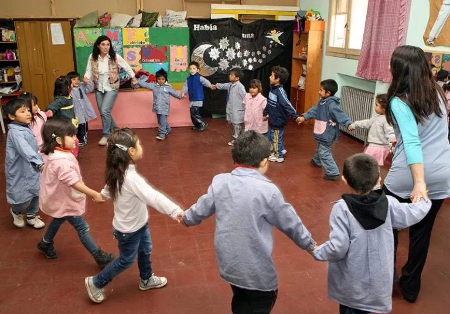

🏰 Nuestra Zona de Juegos 🏰
Espacios llenos de aventuras donde jugar es la mejor forma de aprender. Saltamos, reímos y compartimos momentos inolvidables.
En nuestro jardín, cada rincón está lleno de magia, colores y aprendizajes. 🌟
Te invitamos a descubrir un mundo donde los sueños florecen y cada peque puede volar con la
imaginación.
Espacios llenos de aventuras donde jugar es la mejor forma de aprender. Saltamos, reímos y compartimos momentos inolvidables.

Rincones temáticos donde la fantasía se encuentra con la creatividad. Ideal para explorar con los sentidos y construir historias.
Actividades al aire libre, descubrimientos en la naturaleza y propuestas para que cada peque explore el mundo a su ritmo.